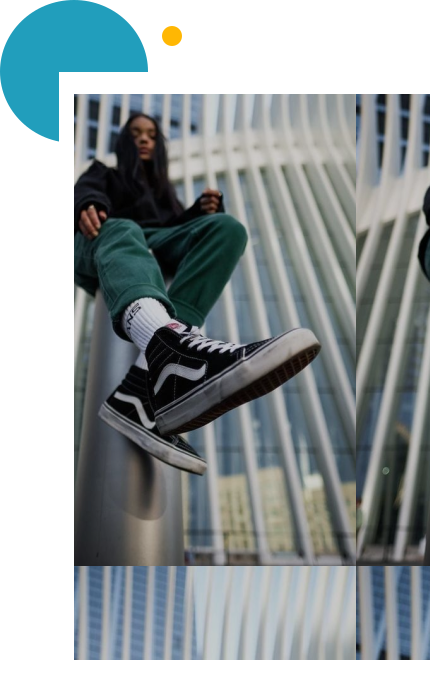

Fotografi
Seni Melukis dengan
Cahaya
Read now


Fotografi ?
Fotografi adalah sebuah seni melukis dengan cahaya yang memperlihatkan adanya
relasi intensional yang tercipta antara objek dan seorang fotografer dalam sebuah foto. Pada
hakekatnya, fotografi merupakan bentuk komunikasi secara visual yang bisa dinikmati oleh
banyak orang hingga terjalin suatu kontak pemahaman makna. Untuk mengabadikan sebuah
objek diperlukannya alat yang disebut dengan kamera.
Kamera ?

Kamera adalah alat yang digunakan untuk ‘menangkap’ cahaya melalui sensor yang
kemudian diterjemahkan menjadi gambar. Jika jumlah cahaya yang tertangkap di sensor
kurang atau berlebih, maka gambar akan menjadi terlalu gelap (underexposed/UE) atau terlalu
terang (overexposed/OE). Oleh karena itu, perlunya pemahaman lebih jauh mengenai exposure
triangle yang merupakan tiga elemen penting dalam mengatur cahaya.
1. Shutter speed : durasi shutter kamera dibuka sehingga cahaya mengenai sensor. Jika shutter speed lambat, maka gerakan objek yang tertangkap menjadi kurang jelas (blur).
2. Aperture (F): mengatur lebar-sempitnya bukaan bilah kamera. Jika semakin kecil aperture, maka cahaya yang terdeteksi menjadi banyak.
3. ISO : sensitifitas sensor kamera terhadap cahaya. Jika semakin besar ISO, maka semakin sensitif terhadap cahaya sehingga gambar lebih terang, tetapi lebih banyak noise.
1. Shutter speed : durasi shutter kamera dibuka sehingga cahaya mengenai sensor. Jika shutter speed lambat, maka gerakan objek yang tertangkap menjadi kurang jelas (blur).
2. Aperture (F): mengatur lebar-sempitnya bukaan bilah kamera. Jika semakin kecil aperture, maka cahaya yang terdeteksi menjadi banyak.
3. ISO : sensitifitas sensor kamera terhadap cahaya. Jika semakin besar ISO, maka semakin sensitif terhadap cahaya sehingga gambar lebih terang, tetapi lebih banyak noise.

Angle
Berikut beberapa angle fotografi
yang sering digunakan:
1. Low Angel: sudut pengambilan gambar dengan posisi kamera lebih rendah daripada objek yang difoto.
2. High angle: sudut pengambilan gambar dengan posisi kamera lebih tinggi daripada objek yang difoto.
3. Eye Level: sudut pengambilan gambar dengan posisi kamera sejajar dengan objek yang difoto.
4. Bird Eye View: teknik pengambilan gambar dengan sudut pandang dari mata seekor burung.
5. Frog Eye View: sudut pengambilan gambar dengan posisi kamera sejajar mata katak atau hampir menyentuh tanah.
1. Low Angel: sudut pengambilan gambar dengan posisi kamera lebih rendah daripada objek yang difoto.
2. High angle: sudut pengambilan gambar dengan posisi kamera lebih tinggi daripada objek yang difoto.
3. Eye Level: sudut pengambilan gambar dengan posisi kamera sejajar dengan objek yang difoto.
4. Bird Eye View: teknik pengambilan gambar dengan sudut pandang dari mata seekor burung.
5. Frog Eye View: sudut pengambilan gambar dengan posisi kamera sejajar mata katak atau hampir menyentuh tanah.